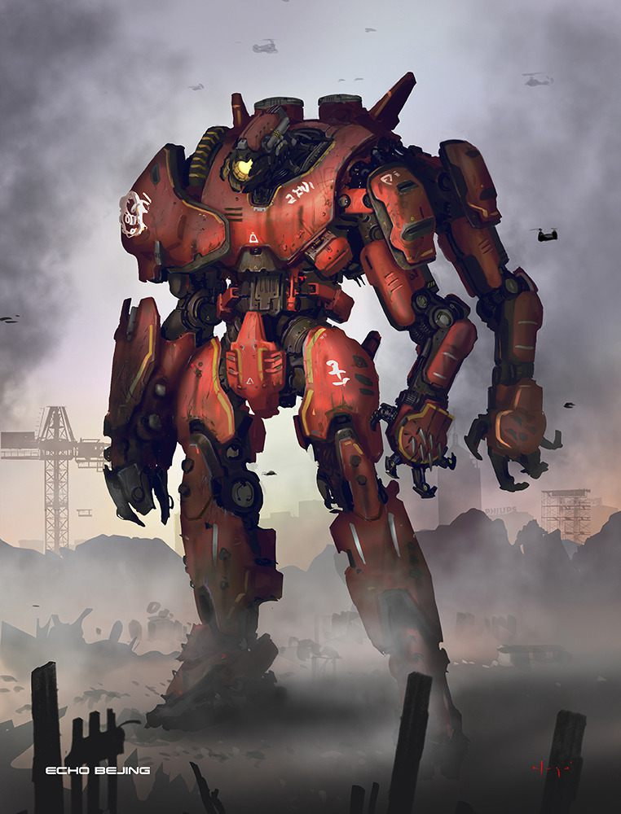

Название: Багровый Тайфун
Серия: 4
Вес: 1722тон
Рост: 76м
История
Был сконструирован в Шаньтоу и запущен в 2018 году. К 2025 году на счету Багрового Тайфуна было восемь убитых кайдзю, но при защите бухты Гонконга егерь потерпел сокрушительное поражение вместе с Чёрным Альфой.
Описание
Егерь четвёртой серии, созданный в Китае. Титановые покрытия красного цвета, главное оружие – вращающиеся лезвия на трёх руках. Верхняя часть корпуса может поворачиваться на 360°. Управляется тремя пилотами-братьями Чоном, Ху и Джином Вей Тэн. Примечательная техника ведения боя – «грозовая туча».